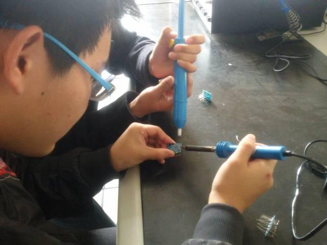

使用小程序
看看这样的数字对比，电子工程师还有前途吗？

我们先来看看，一个合格的电子工程师都有那些要求。
做一名电子工程师，要求具有扎实的理论基础、丰富的电子知识，具有良好的电子电路分析能力。电子工程师指从事电子设备和信息系统研究、教学、产品设计、科技开发、生产和管理等工作的高级工程技术人才。电子工程师一般分为硬件工程师和软件工程师。硬件与软件是不可分离的，硬件需要软件来执行其程序实现具体功能。软件需要硬件做载体。
其中，硬件工程师要了解电路方面的知识，知道常用电子元器件的作用、原理，会使用电子测量工具，会使用电子生产工具，还要会装配、测试、维修等等，是技术与手动操作的结合。软件工程师需要精通电路知识、模拟电路、数字电路，会分析电路图、设计电路图、制作PCB，了解各类电子元器件的原理、用途、型号，精通单片机开发技术；会使用编程语言（汇编语言、C语言），能很熟练的用电脑作为辅助设计工具进行工作 能得心应手的使用常用的设计软件；会分析电路故障，对产品进行调试、检测等。
1、研究、开发、设计、生产集成电路、半导体分立器件、电真空期间和特种器件；
2、研究、开发、设计、生产阻容元件、敏感元件，磁性器件、石英晶体与器件、电子陶瓷与压电、铁电晶体器件、机电组件、电子线缆、光纤光缆、化学物理电源及激光、红外技术的应用等；
3、研究、开发电子元器件封装技术及其应用；
4、研究、开发电子元器件试验与检测技术及其应用。
现代电子科学技术的一个特点是多学科交叉。电子信息工程师在专业知识储备期间主要是学习基本电路知识，并掌握用计算机等处理信息的方法。除了有扎实的数学知识，对物理学的要求也很高，并且主要是电学方面；要学习许多电路知识、电子技术、信号与系统、计算机控制原理、通信原理等基本课程。学习电子信息工程自己还要动手设计、连接一些电路并结合计算机进行实验，对动手操作和使用工具的要求也是比较高的。此外，电子工程师除了本专业外还应该掌握两门以上的相关学科。知识既精深又广博是的电子工程师成长为某领域专家的重要标志，也是提升自身价值的重要途径之一。在此基础上，将技术成果转化为价值，是电子工程师自我发展的必由之路。
电子工程师的职业发展方向主要有产品研发经理、技术经理、电子技术研发工程师、IT项目经理等，除了电子技术研发工程师是继续专注于技术领域之外，其余的都是由单纯做技术转为做技术管理。走上管理型道路是电子工程师职业发展的一个大方向。这条道路需要综合性的能力素养，既要精通电子方面的专业知识，又要在实践中积累管理经验。
总的来看，电子信息工程是一门应用计算机等现代化技术进行电子信息控制和信息处理的学科，主要研究信息的获取与处理，电子设备与信息系统的设计、开发、应用和集成。现在，电子信息工程已经涵盖了社会的诸多方面，像电话交换局里怎么处理各种电话信号，手机是怎样传递我们的声音甚至图像的，我们周围的网络怎样传递数据，甚至信息化时代军队的信息传递中如何保密等都要涉及电子信息工程的应用技术。随着社会信息化的深入，各行业大都需要电子信息工程专业人才。
2015年，中国芯片产业进口花费高达2307亿美元，是原油进口总额的1.7倍。大多数核心芯片均来自于国外。中国急需发展芯片产业，而发展芯片产业一个必不可少的条件就是有足够的人才。目前中国政府还在通过大基金加大半导体产业投入。
从总体上看，电子工程师未来前景光明。不过从薪资待遇分析，一般情况下，电子工程师月薪在2000-6000元之间浮动。起薪普遍在2000-4000元之间，大多数能在工作一两后获得加薪，大概20%至50%不等。工作几年之后，经验丰富、技术水平高的电子工程师月薪可达1万元左右。
这和典型的软件工程师相比，也就是大家常说的“码农”相比，还是有很大差距。典型的“码农”，初级水平起薪就在5000-6000元左右，中级水平已经是8000——10000左右，而高级更是上不封顶。加之现在互联网创业风气，更是把软件工程师的待遇给炒作起来了。
在这种情况下，薪资待遇，确实是电子工程师发展的痛点。
信息部/吴心成